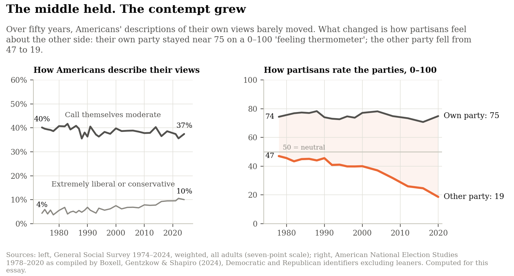
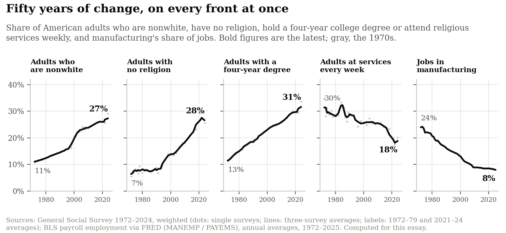
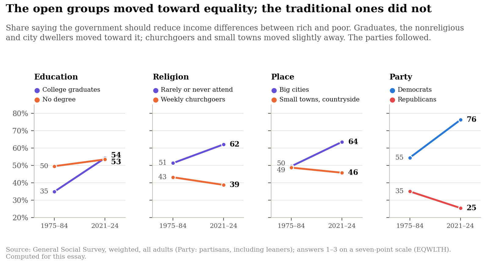
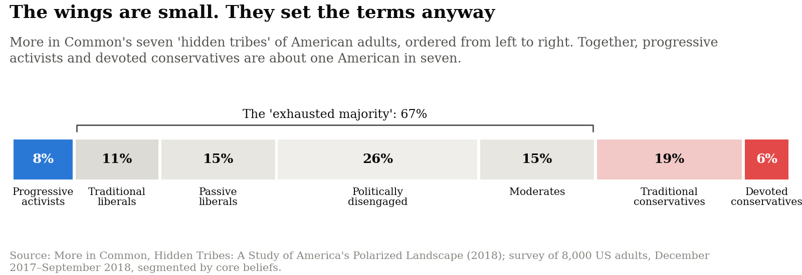
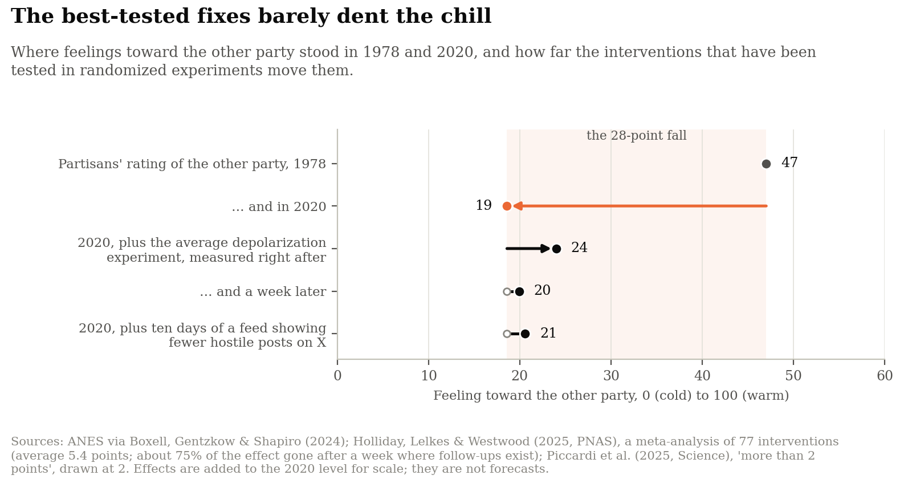
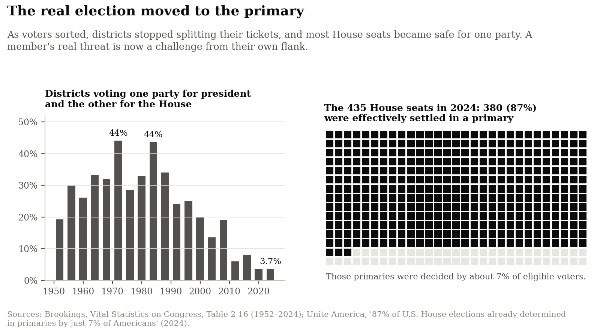

America's political crisis has a peculiar feature: the center has not disappeared, but mutual contempt has soared. Over the past half-century, most Americans did not move to the political extremes, at least by their own description. In the General Social Survey, 40% called themselves moderate in 1974, and 37% did in 2024. The share calling themselves extremely liberal or extremely conservative grew from 4% to 10%, a real increase, but still a small minority.
What changed far more is how partisans feel about the other side. Since 1978, the American National Election Studies have asked people who identify with a party to rate both parties on a 0-to-100 "feeling thermometer." Their rating of their own party has stayed near 75. Their rating of the other party has fallen from a lukewarm 47 to an icy 19 (Figure 1). Almost all of the widening gap, 98% of it, comes from contempt for the other side rather than affection for one's own.

Fig. 1 — The share of moderates barely moved; partisans' feelings toward the other side collapsed. Sources: General Social Survey, weighted; ANES 1978–2020 as compiled by Boxell, Gentzkow and Shapiro; computed for this essay.
How does a country where so few moved to the extremes come to loathe itself? The answer this essay defends is that Americans did not so much drift apart as sort. Disagreements that once ran through each party, and through each town and congregation, came to run between the parties, and race, religion, education, and place lined up behind them. When every difference points the same way, the other party stops looking like neighbors who vote differently and starts looking like a different people. Lilliana Mason has linked sorting of this kind to anger and contempt, even when citizens' policy views remain moderate.
The deepest root of the quarrel, this essay argues, is the velocity of change, and the uneven capacity of communities to absorb it. Change by itself does not divide a country. The automobile, electrification, and television each remade daily life without, by themselves, splitting the country, in part because nearly everyone eventually got the car and the refrigerator. The change of the past half-century was different in two ways. It reached into identity—who belongs, which values deserve respect, whose knowledge carries authority—and not only into daily routine. And its gains and costs fell on different people: the gains went first to the big metropolitan regions, the college-educated, and the young; the costs fell hardest on small towns, the less educated, and the old.
Change faster than part of a society can adapt to is what Alvin Toffler, writing in 1970, called future shock. The claim is not that today's change is the fastest in American history. The immigration, urbanization, and modernism of the early twentieth century came with a culture war of their own: Prohibition, the Scopes trial, the immigration quotas of 1924, and a revived Ku Klux Klan. The claim is that change divides a country when it outruns part of the population's capacity to absorb it, as it now has on every front at once: who lives here, what the economy rewards, who counts as an expert, and how many still go to church. This essay has no direct measure of that capacity; the claim is an interpretation.
Change explains what Americans fight about. It does not, by itself, explain how bitterly they fight. For that, the essay turns to America's leaders, media, and two-party system.
The argument has three layers, and fits in one picture (Figure 2):
- Two core disputes. Americans disagree about two separate things: how open to be to change, and how far government should go to make people more equal. For most of the twentieth century, the two cut across each other. The parties divided over equality, and each held both the open and the traditional.
- The Great Rotation (step one). The two disputes came to line up with each other and with party. The open—college-educated, urban, secular—moved toward the egalitarian left, where most nonwhite Americans already stood. The traditional—less educated, small-town, devout, and mostly white—largely kept their views on equality, but came to anchor the party of self-reliance. Parties that had each spanned the political map came to occupy opposite sides of it.
- The radical wings (step two). Four forces—party elites, partisan media, social media, and the two-party system—pulled the two camps further apart and amplified their most confrontational voices, until each grew a revolutionary wing: MAGA, now governing in Donald Trump's second term, on the right, and on the left the progressive vanguard its critics call "woke." Neither is liberal in the old, pluralist sense of the word, though they wield very different kinds of power.
![Polarization in two steps, a schematic. Three panels joined by arrows, each a square with equality on the left, self-reliance on the right, openness at the bottom and tradition at the top. Before about 1975, four corners and two parties: Democrats fill the left half, Southern Democrats at the top and Northern Democrats at the bottom; Republicans fill the right half, Goldwater Republicans at the top and Rockefeller Republicans at the bottom; a vertical party line divides them. Step one, the Great Rotation: an arrow turns the party line from vertical onto the diagonal; Democrats sit in the open, egalitarian corner and Republicans in the traditional, self-reliant corner, and the two mixed corners, traditional but egalitarian and open but self-reliant, are labeled thinning. Step two, the radical wings: the same two camps, with small, solid clusters pulled out beyond them, Woke at the open, egalitarian end and MAGA at the traditional, self-reliant end; party elites, partisan media, social media and two-party politics pull the ends apart.](extremism-two-steps.png)
Fig. 2 — The argument in one picture. This is a schematic, not data; Figures 6, 9 and 10 show the measurements behind each step.
A word on certainty. Much of the evidence here shows timing and association, and only some links rest on experiments. This is the account the essay defends, not a proven causal chain; rival orderings, with party leaders or media-driven sorting first, fit much of the same evidence about as well.
Layer 1: The Core Disputes—Openness and Equality
A country remade within one working life
Begin with the scale of the change. In the 1970s, about one American adult in nine was nonwhite; today more than one in four is. The share with no religion has quadrupled, mostly since 1990. The share with a four-year college degree has more than doubled, while weekly churchgoing has fallen by two-fifths. Manufacturing, which employed about one worker in four in 1972, now employs one in twelve (Figure 3).

Fig. 3 — Who lives here, what the economy rewards, and who still goes to church all changed within a single working life. Sources: General Social Survey, weighted; Bureau of Labor Statistics payroll employment via FRED; computed for this essay.
Someone who took a factory job in a small Ohio town in 1975 retired into a different country.
From class to culture
As the country changed, class stopped predicting party. From the New Deal on, American politics was organized by economic class: the working class leaned Democratic, the comfortable leaned Republican. That divide has all but vanished. In the 1970s, partisans who called themselves middle or upper class were 15 points more Republican than those who called themselves working class; in 2021–24 there was no difference at all.
Cultural divides took its place (Figure 4). The racial divide, already wide, grew wider; the religious divide grew fivefold; the gap between small towns and big cities doubled. And education reversed. In the 1970s, partisans without a college degree were the more Democratic group, the party's working-class base; today they are 14 points more Republican than graduates. All four divides now point the same way.
![The old class divide faded; four cultural divides took its place. Arrow chart of how many points more Republican one group's partisans were than another's, from the 1970s to 2021–24. Middle or upper class versus working or lower class: plus 15 to 0. No four-year degree versus college graduates: minus 11 to plus 14. Weekly churchgoers versus those who rarely or never attend: plus 5 to plus 25. Small towns and countryside versus big cities: plus 15 to plus 29. White versus nonwhite: plus 25 to plus 34.](extremism-class-to-culture.png)
Fig. 4 — Class stopped predicting party; education, religion, place and race now all point toward the same party. Source: General Social Survey, weighted; partisans include leaners; computed for this essay.
The United States is not alone. Across 21 Western democracies, Amory Gethin, Clara Martínez-Toledano, and Thomas Piketty find that university-educated voters moved left and less-educated voters toward the nationalist right over the same decades. What is peculiar to America is less this realignment than how completely its two parties absorbed it.
The first dispute: openness versus tradition
The first of the two disputes, and the more visible, is the clash between openness to change and the preservation of tradition. In the United States, it runs along four fault lines, each setting an open future against an inherited way of life (Table 1).
Table 1 — The first dispute: four fault lines between openness and tradition.
| Fault line | Openness | Tradition |
|---|---|---|
| Demographics and immigration | A pluralistic, multi-ethnic future | The demographic and cultural continuity of the past |
| Economy and globalization | An integrated global knowledge economy | The local manufacturing and trades it displaced |
| Science and expertise | Deference to evolving scientific consensus and expert institutions | Trust in inherited common sense, personal autonomy, and local judgment |
| Geography and religion | Secular, fast-moving metropolitan regions | Faith-anchored, slower-paced small towns |
Figure 4 already captured the last of these, religion and place. For the first three, Figure 5 tracks four questions from the General Social Survey. On each, the parties once stood much closer together than they do now, and the striking thing is who moved.
![Openness, globalization, change, expertise: where the parties parted. Four small line charts of the share of Democrats and of Republicans agreeing with a statement. The number of immigrants should be reduced: Republicans 61% in 2004–08 and 64% in 2021–24, Democrats falling from 48% to 20%. America should limit imports to protect its economy: Democrats 73% and Republicans 66% in 1996, Democrats 36% and Republicans 68% in 2021–24. Science makes our way of life change too fast: Democrats 48% and Republicans 44% in 2006–10, Democrats 38% and Republicans 49% in 2021–22. A great deal of confidence in the scientific community: Republicans 49% and Democrats 43% in 1973–84, Republicans falling to 27% and Democrats rising to 57% in 2021–24.](extremism-openness-change-expertise.png)
Fig. 5 — On immigration, trade and the pace of change, the gaps opened mainly because Democrats moved; on confidence in science, Republicans moved, from the more confident party in the 1970s to by far the less confident. Source: General Social Survey, weighted; computed for this essay.
On trade and the pace of change, Republican voters stand about where they did twenty years ago. On immigration they held steady for years, then jumped in the 2024 survey, to 76%. Over the long run the gaps opened mainly because Democrats moved: in 2004–08, nearly half of Democrats wanted fewer immigrants admitted; by 2021–24, one in five did. In 1996, Democrats were the more protectionist party; now they are by far the less. On science, it was Republicans who moved. In 1973–84, they were more likely than Democrats to have a great deal of confidence in the scientific community; by 2021–24, they were less than half as likely. (Party averages move both because people change their minds and because people change parties; these surveys cannot separate the two.)
That pattern matters. Over the long run, these data do not show traditional America lurching backward. They show the more open party moving fast, and the more traditional one moving less while turning against the institutions that certify what is new. Backlash here means changed loyalties and anger more than changed opinions. When change feels too fast and imposed from outside, the experts who announce it can stop looking like neutral referees and start looking like the priesthood of an alien, managerial culture.
Does rapid change cause the backlash, or merely accompany it? The strongest evidence comes from natural experiments, and it shows the same shock pushing different places in opposite directions. When Denmark assigned refugees to municipalities by a quasi-random rule, Christian Dustmann, Kristine Vasiljeva, and Anna Piil Damm found that larger allocations raised the vote for anti-immigration parties in all but the most urban municipalities, where they had, if anything, the opposite effect. When Chinese imports hit American manufacturing after 2000, David Autor and colleagues found that trade-hit districts with white majorities swung toward conservative Republicans, while trade-hit districts with nonwhite majorities swung toward liberal Democrats. So change can cause a backlash, but not automatically: the result depends on who lives there, in these two studies on whether a place is urban and on its racial makeup. Both measure votes, not hostility.
From the metropolis, traditionalist resistance is easy to dismiss as nostalgia or prejudice. From a community that has lost jobs, institutions, and influence, it feels like self-defense: Our livelihoods changed without our consent. Your creative destruction cost us our factories, and your border policies transformed our towns without asking us. We absorbed costs that prosperous regions barely noticed, and now the people who gained from those changes tell us that our objections are ignorant or immoral. That experience deserves to be understood, even when the political conclusions drawn from it are mistaken.
The second dispute: equality versus self-reliance
The second dispute is how far government should go to promote equality, and how much to leave to self-reliance and the hierarchies that markets and tradition produce. It covers redistribution and public provision, and whether groups once kept at the bottom should be lifted to equal standing. Reviewing half a century of research, John Jost and colleagues concluded that "the core ideology of conservatism stresses resistance to change and justification of inequality." In the conservative creed, in other words, the two disputes go together. In the American public of the 1970s, as we will see, they barely did, and their later fusion is what needs explaining.
Today they do, and they sort American partisans far better than demographics do. In the 2021–24 General Social Survey, four questions—two about change (immigration and confidence in science) and two about equality (reducing income differences and helping pay for medical care)—explain 42% of the variation in party, three times the 14% explained by race, religion, education, and place combined. The figure is an association, not a measure of cause, since partisans also adopt their party's positions. But it shows what the party line now tracks: what Americans think about change and equality, more than who they are.
Two disputes, then. For most of the twentieth century, they cut across each other. The story of American polarization is the story of how both came to divide the parties.
Layer 2: The Great Rotation (Step One)
Four corners become two
Two independent disputes yield four political corners. Beside the consistent liberal and the consistent conservative stand two mixed types: traditionalists who want a strong safety net, like a churchgoing union electrician, and cosmopolitans who welcome social change but want markets left alone and taxes low, like a socially liberal banker.
For the middle decades of the twentieth century, both mixed corners were heavily populated, and each had a home in one of the parties. The Democrats joined churchgoing Southern traditionalists to Northern labor liberals; the Republicans joined Goldwater conservatives to socially moderate Rockefeller Republicans. In the 1970s, knowing what an American thought about abortion, premarital sex, homosexuality, or marijuana told you almost nothing about whether they wanted the government to reduce income differences or help the poor: the correlation between the two sets of views was 0.04, where 0 means one says nothing about the other and 1 means it says everything.
Disputes that cut across each other cushion a pluralist democracy. Your opponent on tax rates might be your neighbor, and sit beside you in church on Sunday.
Three things then happened, and it helps to keep them apart: people sorted into the parties, the parties rotated to new positions, and, later, many voters' own views bundled together. The second is the Great Rotation, and it can be measured. Figure 6 places the Democrats and Republicans interviewed by the General Social Survey on the two disputes, using an index of four questions about equality and another of four moral questions, the survey's longest-running stand-in for openness, and draws the region where each party's partisans are most densely packed. In 1974–84, the two parties overlapped heavily and sat side by side: they argued mainly about economics, and each had plenty of members in every corner of the map. By 2016–24, they had slid apart along the diagonal, Democrats toward the egalitarian, open corner and Republicans toward the self-reliant, traditional one.
![The Great Rotation, measured. Two square panels with equality to the left, self-reliance to the right, openness at the bottom and tradition at the top, each showing the region that holds the densest half of Democrats, in blue, and of Republicans, in red. In 1974–84 the two regions overlap heavily and sit side by side, and the line between the party averages runs at 12 degrees; the mixed corners hold 24% of adults (egalitarian but traditional) and 23% (self-reliant but open). In 2016–24 Democrats sit lower left, egalitarian and open, and Republicans upper right, self-reliant and traditional, overlapping much less; the line between the party averages runs at 31 degrees, and the mixed corners hold 19% of adults each.](extremism-rotation-cloud.png)
Fig. 6 — The parties slid apart along the diagonal: the line between their averages turned from 12° toward 45°, reaching 31°, and the distance between them more than doubled. Source: General Social Survey, weighted; computed for this essay.
The same turn shows up in individual partisans. The share who sit on their own party's side of the public on both disputes rose from 30% in 1974–84 to 48% in 2016–24. But none of this is complete. The parties' gap on culture grew from about a fifth of their gap on equality to about three-fifths, not to parity, and across all adults the correlation between the two disputes is still only 0.28. The mixed corners did not empty: more than a third of adults still live in them, though neither party's average now sits near them. The churchgoing union electrician still exists. And the link is weaker among nonwhite Americans (0.17), so this is largely a story about white America.
The divides line up
The same sorting shows up in who people are. Count how many of four Republican-leaning traits a partisan has: white, a weekly churchgoer, no four-year degree, a small-town or rural address. In the 1970s, the count mattered little: partisans with all four traits were only 14 points more likely to be Republican than those with one. Today, 14% of partisans with none of the four traits are Republicans, and 87% of those with all four are (Figure 7). Few people sit at those extremes: nearly four partisans in five have one or two of the traits, and among them party is far from settled, which is why views predict party better than traits do. But as each trait comes to predict the same party, each party comes to look like one social world, even though few partisans fit the type.
![The four divides now point toward the same party. Left: line chart of the Republican share of partisans by the number of four Republican-leaning traits they have, for the 1970s, 1990s, 2010s and 2021–24; the 1970s line is nearly flat, from 28% with one trait to 42% with four, while the 2021–24 line climbs from 14% with none to 87% with four. Right: the odds multiplier for each extra trait rises from 1.26 in the 1970s to 2.63 in 2021–24, with 95% intervals, clustered by survey sampling unit, that do not overlap.](extremism-stacking.png)
Fig. 7 — In the 1970s, race, religion, education and place pulled partisans in different directions; now they line up behind the same party. Source: General Social Survey, weighted; computed for this essay.
This is the essay's proposed answer to its opening puzzle. When race, religion, education, and place all point toward the same party, partisanship becomes what Mason calls a mega-identity, and losing an election feels like losing on everything at once. Her experiments and surveys link sorted identities to anger and bias even among people whose policy views are moderate. The General Social Survey does not measure hostility, so this link rests on her work.
What joined the two disputes
Why should openness travel with equality at all? Part of the answer lies in what the changes were. Much of the change of the past sixty years—civil rights, feminism, mass immigration, gay rights—brought groups once kept at the margins into full membership in American life. To welcome that change was largely to endorse their equal standing; to resist it was often to defend an older order of who comes first. But the link was never automatic, as the electrician and the banker show, and for decades millions of Americans lived comfortably in the mixed corners. Something had to join them.
One question makes this visible. Since the 1970s, the General Social Survey has asked whether the government should reduce income differences between rich and poor. Figure 8 compares the answers of open and traditional groups then and now. College graduates, once far less egalitarian than Americans without a degree, swung toward redistribution and caught up with them. Americans who rarely or never attend religious services, and residents of big cities, moved the same way. Weekly churchgoers and small-town residents did not; they moved slightly away. Between Democrats and Republicans, the gap grew from 20 points to 51.

Fig. 8 — On the government's role in reducing inequality, the open groups moved left and the traditional groups stood still or moved right; the parties pulled 51 points apart. Source: General Social Survey, weighted; computed for this essay.
Figure 9 shows when the two views came together. Among white college graduates, they were already linked in the 1970s, when the survey's measures begin. The link then grew at about the same pace among graduates and non-graduates, mostly after 2014. Part of the latest jump reflects the move to online interviews in 2021–24, which inflates such correlations, but the in-person interviews of 2016 and 2018 already show most of it.
![Step one: when openness and equality fused. Left: line chart, by period from 1974–84 to 2016–24, of the correlation between views on equality and views on cultural change, with 95% intervals: among white college graduates it rises from 0.21 to 0.49; among white non-graduates from 0.03 to 0.26, mostly in the last period; among nonwhite Americans it stays near zero until 2016–24 (0.17); among all adults from 0.04 to 0.28. Right: among white adults, the correlation between opposing redistribution and two racial views—denying that racial gaps are mainly due to discrimination, and agreeing that Black Americans should work their way up without special favors—stays near 0.15 to 0.24 from 1985–94 to 2006–14 and roughly doubles in 2016–24, to 0.43 and 0.38.](extremism-two-steps-fusion.png)
Fig. 9 — Left: openness and equality were already linked among white college graduates in the 1970s; the link then grew in every group, mostly after 2014. Right: among white Americans, racial views became a much stronger bridge to opposing redistribution after 2014. Source: General Social Survey, weighted; computed for this essay.
Contempt came before the bundled views, and that order matters for any causal story. Congress began pulling apart in the late 1970s. The party gap between white and nonwhite partisans reached about its present size by the 1980s, and the religious gap widened through the 1990s and 2000s. By 2012, 69% of the rise in the thermometer gap since 1978 had already happened. The fusion of opinion among ordinary voters, and the new gaps by education and place, came mostly after that. So contempt did not wait for most Americans to bundle their views. It grew first as party lined up with ideology and religion, and for many voters the bundled views probably came later, as they adopted their side's positions. That order also fits a rival account in which leaders, not change, came first; these data cannot separate the two.
How graduates came to link openness and equality
College graduates have long been the most likely to treat openness and equality as a package, which this essay calls the bundle. Among white graduates, the two views were already correlated at 0.21 in 1974–84, when the correlation among white Americans without a degree was 0.03; by 2016–24, it had reached 0.49 among graduates. Why graduates? Three explanations compete—what universities teach, whom they admit, and who pays closest attention to party leaders—and the evidence favors the two less dramatic ones.
The dramatic explanation is that universities taught the bundle. The circumstantial case is real: across five fields at 40 leading universities, Mitchell Langbert, Anthony Quain, and Daniel Klein counted 11.5 registered Democrats for every Republican, and campus norms, from admissions essays to diversity statements, have rewarded commitment to openness and equity together. But the causal evidence is weak:
- Following students randomly assigned to roommates, Logan Strother and colleagues found no sign that students moved left in their first year of college.
- Comparing siblings, Colin Campbell and Jonathan Horowitz found that a degree raises support for civil liberties and gender equality—the openness half of the bundle—but that its apparent effect on political orientation reflects family background.
- Graduates in business, science, and engineering link openness and equality nearly as tightly as graduates in the humanities and social sciences.
- The link among graduates was already visible in the 1970s, decades before anyone wrote a diversity statement. That rules out recent campus norms as the origin, though not as a later boost, and not the campuses of the 1960s.
The quieter explanations fit better. The first is selection: the university gathered people already inclined toward openness and credentialed them to lead corporate, media, and civic institutions. Selection can explain why graduates started out different, but not why they later swung toward redistribution. The second explanation, attention, may. Since Philip Converse, political scientists have known that the best-informed citizens hold the most tightly bundled views, and John Zaller showed why: they are the ones who hear, and absorb, the packages that party leaders assemble. Graduates may have learned the bundle early because they paid the closest attention to those leaders, whose signals on race date from the 1960s, well before Congress's roll-call votes began to diverge.
How traditional Americans joined the party of self-reliance
On the right, the puzzle is different. Traditional Americans did not, on the whole, turn against redistribution: weekly churchgoers, small-town residents, and Americans without a degree answer the survey's question about income differences much as they did around 1980 (Figure 8). What changed is that their open neighbors moved away from them, and that many of them ended up in the party of lower taxes and smaller government, whose voters grew more opposed to redistribution. How did churchgoing, working-class Americans, many from families that had benefited directly from New Deal programs, come to anchor that party? Two bridges carried them: race and religion.
The first bridge was race, and party leaders laid it. When a Democratic president pushed through the Civil Rights Act of 1964 and the Republican nominee, Barry Goldwater, voted against it, the parties began to trade places on race, the story Edward Carmines and James Stimson tell in Issue Evolution. Racially conservative white Southerners moved to the Republicans, a defection that, by Ilyana Kuziemko and Ebonya Washington's estimate, accounts for the entire drop in Southern white Democratic identification between 1958 and 1980.
The message was simple: Washington takes your money and gives it to people who are not like you. In Why Americans Hate Welfare, Martin Gilens showed that white opposition to welfare rested less on principled individualism than on the belief that its recipients were Black and undeserving. Arlie Hochschild heard the same story in Louisiana, told as a "deep story" of people waiting patiently in line for the American Dream while others cut ahead with the government's help. Among white Americans, denying that racial gaps are mainly due to discrimination already went with opposing redistribution in 1985–94, a decade before Fox News launched. The link roughly doubled after 2014 (Figure 9, right), as white Democrats' views on race shifted (Figure 10).
The second bridge was religion. Beginning with Ronald Reagan's 1980 campaign, Republicans allied with newly mobilized conservative evangelicals, and moral issues that had cut across the parties became partisan tests, as Geoffrey Layman shows. On abortion, the parties stood within a few points of each other until the late 1980s; by 2022–24, they were about 50 points apart. Once the racial gap between partisans stopped growing, the religious gap kept widening, from 5 points in the 1970s to 25 today. Cause runs both ways here: partisans adjust their religious practice to fit their politics, and the growth of the nonreligious was partly a reaction against the religious right.
Partisan media reinforced both bridges. Conservative talk radio went national in the late 1980s and Fox News launched in 1996, giving traditional America a daily channel that tied cultural anxiety to hostility toward government. Fox's spread across local cable systems raised Republican vote shares and, by the most careful estimates, moved its viewers' views to the right.
Leaders mattered because voters follow them: Gabriel Lenz has shown that voters tend to adopt their leaders' positions rather than choose leaders for their positions. And cause ran both ways on race as well. Racial attitudes pulled white voters into parties, but party loyalty also pulled racial attitudes along: as party lines hardened, white partisans brought their racial attitudes into line with their party.
Layer 3: The Radical Wings (Step Two)
If the Great Rotation put the parties on a single line, the second step stretched it. The share of partisans who call themselves extremely liberal or extremely conservative has roughly doubled in both parties since the early 1990s, fastest lately among Republicans. And after a quarter-century of stability, white Democrats' views on race shifted sharply after 2014 (Figure 10); that shift is the ground the left wing grew on, not the wing itself.
The two steps are distinct in logic more than in time. Most of the mass public's fusion and about half of the wings' growth came in the same decade, one marked by protests over police killings, Donald Trump's rise, the pandemic, and smartphones in nearly every pocket.
![Step two: when the wings formed. Left: line chart, 1974–2024, of the share of Democrats calling themselves extremely liberal and of Republicans calling themselves extremely conservative; both hover near 3% to 4% until the late 1980s, rise gradually, and reach about 9% for Democrats by 2018 and about 12% to 13% for Republicans in 2022–24. Right: line chart, 1977–2024, of the share of white Democrats and white Republicans saying racial gaps are mainly due to discrimination; white Democrats stay near 40% until 2014 and rise to about three-quarters by 2021–24, while white Republicans fall from about 35% to about 20% and stay there. The years 2021–24, when most interviews moved online, are shaded.](extremism-two-steps-wings.png)
Fig. 10 — Extreme self-placement rose in both parties, fastest lately among Republicans; white Democrats' views on race shifted sharply after 2014. Source: General Social Survey, weighted; computed for this essay.
Both wings are minorities. In More in Common's Hidden Tribes study, progressive activists made up about 8% of adults and devoted conservatives 6%: together about one American in seven, against an "exhausted majority" of two-thirds with flexible views (Figure 11). But intense minorities set the terms of a fight, and four forces handed them the megaphone.

Fig. 11 — The two most committed segments together are about one American in seven; two-thirds belong to an "exhausted majority." Source: More in Common, Hidden Tribes (2018).
Four forces that pulled the ends apart
None of the four acts alone, and none explains the whole trajectory. They explain the right wing better than the left; for the left's institutional turn, this essay has only timing and examples. Table 2 summarizes what the evidence says about each.
Table 2 — The four forces: what the evidence shows.
| Force | When it arrived | What the evidence shows | Verdict |
|---|---|---|---|
| Party elites | Congress diverged from the late 1970s | House Republicans moved more than three times as far from the center as House Democrats; voters follow their leaders' cues | The likeliest lever, above all on the right |
| Partisan media | Talk radio from the late 1980s; Fox News in 1996 | Fox's rollout raised Republican vote shares by 0.4 to 0.7 points; it arrived after more than half of the House's divergence | Moved votes; effect on hostility untested |
| Social media | Used by most adults by 2011 | Posts attacking the other side spread farther; feed experiments move partisan dislike by about 2 points on a 100-point scale | An accelerant of the wings, not the origin |
| The two-party system | Always there; safe seats multiplied after the 1990s | Split-ticket districts fell from 44% to under 4%; 87% of House seats are settled in primaries | Once voters are sorted, turns a backlash into a fight across the whole electorate |
Party elites. The leaders moved first and furthest, and asymmetrically (Figure 12). Between 1971 and 2025, the average House Republican moved 0.27 to the right on Voteview's scale of roll-call votes, which runs from about −1 (most liberal) to +1 (most conservative), while the average House Democrat moved 0.08 to the left. The divergence was well under way before talk radio went national, and 59% complete before Fox News launched. Part of this was replacement rather than persuasion: Northern House Democrats have barely moved, and the party's average shifted largely as conservative Southern Democrats gave way.
This asymmetry runs opposite to the one among voters, and issue mix does not explain it: even on government's role, Democratic voters moved about twice as far as Republican voters (Figure 8). So voters were not simply following their own leaders. Many Democrats may have been reacting against Republican leaders, especially after 2016; these data cannot say.
Across ten rich democracies, rising polarization among party elites goes with rising hostility in the public more closely than any other candidate driver, in the data of Levi Boxell, Matthew Gentzkow, and Jesse Shapiro, although with so few countries the result is fragile. Whatever the cross-national evidence, the timing warns against casting new media as the original cause.
![Party leaders pulled apart first, and Republicans moved furthest. Line chart, 1947–2025, of the average roll-call position of House Republicans and House Democrats on the liberal–conservative dimension. Republicans hold near plus 0.25 until the late 1970s, then climb steadily to plus 0.52 in 2025, 0.27 further right than in 1971; Democrats drift from minus 0.31 in 1971 to minus 0.39, 0.08 further left. Vertical lines mark talk radio going national in 1988, Fox News launching in 1996, and most adults using social media in 2011, all after the divergence began.](extremism-leaders-first.png)
Fig. 12 — Congress began pulling apart in the late 1970s, before any of the new media arrived, and Republicans moved more than three times as far as Democrats. Sources: Voteview; Pew Research Center; computed for this essay.
Partisan media. Partisan outlets, which helped tie tradition to anti-government politics, did more than tell audiences whom to support: they shaped what each side believed about the other. In More in Common's Perception Gap study, regular audiences of partisan outlets on both sides, from Breitbart to the Huffington Post, held more distorted pictures of the other side than Americans who did not follow them; only the broadcast networks went with a more accurate picture. Those are associations from one survey, but they implicate partisan media of every kind. Fox's measured effect on votes, at least half a point in recent elections, is real and enough to tip close races. None of the natural experiments measures its effect on hostility, and about three-quarters of the rise in hostility came after it launched.
Social media. It did not create the divide. By 2011, the year a majority of American adults first used social media, the polarization of Congress was already 84% complete and the sorting of party and ideology 67%, and polarization has grown fastest among Americans 65 and older, the least online.
What social media changed was the reward for outrage. The gatekeepers who once filtered what reached a mass audience lost their grip, and hostility began to pay: in a study of millions of Facebook and Twitter posts, each word referring to the political out-group raised a post's odds of being shared by about 67%. The experiments that can isolate the feed's effect on feeling find it real but small. Reranking feeds on X to show fewer or more hostile partisan posts for ten days during the 2024 campaign moved feelings toward the other party by a little more than 2 points on the 100-point thermometer (Figure 13). That is about three years' worth of the long decline since 1978, and an experiment lasting days cannot measure what years of exposure might do. But the decline began decades before the feeds did. Social media is an accelerant, not the origin.

Fig. 13 — Changing the feed, or running the depolarization exercises studied so far, moves feelings a few points against a 28-point fall, and most of the exercises' effect fades within a week. Sources: ANES via Boxell, Gentzkow and Shapiro; Piccardi et al.; Holliday, Lelkes and Westwood.
The two-party system. Change alone does not produce mutual hatred. Of the twelve rich democracies Boxell, Gentzkow, and Shapiro tracked over four decades, partisan hostility clearly rose in four, fastest in the United States, clearly fell in two, and showed no clear trend in six. Growth in the foreign-born share bears no relation to those trends; growth in the nonwhite share goes with rising hostility, but not reliably. In European democracies with proportional representation, the backlash against cultural and demographic change produced parties of its own, such as the Sweden Democrats, the Dutch Party for Freedom, and Germany's AfD. Across 28 European countries, Eelco Harteveld, Philipp Mendoza, and Matthijs Rooduijn find that the hostility tends to concentrate on such radical-right parties and their supporters, rather than splitting the whole electorate in two.
America's winner-take-all elections offered no such outlet. The traditionalist backlash flowed into the Republican Party, cosmopolitan egalitarianism consolidated its hold on the Democrats, and instead of isolating a fringe, the system divided the whole electorate into two armies.
The electoral system is not the whole story. It has been there all along, so it cannot by itself explain why hostility rose. Switzerland, with its proportional elections, had the second-steepest rise, and winner-take-all Britain and Australia did not polarize. This essay's reading is the combination, which no analysis here tests: two parties and a newly sorted electorate.
Sorting then hollowed out the general election (Figure 14). In 1984, 44% of congressional districts voted for one party for president and the other for the House; in 2020 and 2024, fewer than 4% did. In 2024, by Unite America's count, 87% of House seats were effectively decided in primaries in which about 7% of eligible Americans voted, so many members may fear their own flank more than the other party, though studies find little link between such threats and roll-call votes.
This is how a faction can come to govern. Win a party's nomination and you inherit its voters in November, because sorted partisans rarely defect to a party they have come to loathe. That holds for the presidency as well as for safe House seats. The faction's core may be small (Figure 11), but its electorate is not: tens of millions of Trump's voters are not devoted conservatives.

Fig. 14 — Once voters sorted, ticket-splitting all but vanished and nearly nine House seats in ten became safe for one party. Sources: Brookings, Vital Statistics on Congress, Table 2-16; Unite America.
Foreign propaganda, often blamed, does not make the list. A study of Russia's 2016 Twitter operation found that exposure was concentrated among users who were already strong partisans and had no measurable relationship with changes in attitudes, polarization, or voting.
MAGA: Reactionary, Not Conservative
MAGA is usually called conservative, or simply a movement that resists change, but reactionary is the more precise word for its most distinctive ambitions. Conservatism in the Burkean tradition is an ethic of prudence: preserve institutions, reform them gradually, distrust grand designs. MAGA starts from the opposite premise. It holds that the inherited order has already been subverted, and that the institutions running it—the administrative state, the intelligence agencies, the public-health bureaucracy, the universities—are occupied territory to be retaken or torn down.
Mark Lilla draws the distinction in The Shipwrecked Mind: the reactionary is not a conservative but as radical as any revolutionary. Convinced that a golden age of national greatness and cultural coherence was betrayed, the reactionary sets out to restore it by force of will.
The program of Donald Trump's second term fits the description:
- tariffs that by September 2025 had raised the average effective U.S. rate from 2.4% to 17.4%, the highest since 1935 by the Yale Budget Lab's estimate (Figure 15, left), although in February 2026 the Supreme Court ruled, 6–3, that the emergency-powers law behind much of the increase does not authorize tariffs, and the administration replaced part of them with a temporary 10% tariff;
- a purge and reorganization of the professional civil service, and a drive to strip career officials of their protections and replace expertise with loyalty;
- cuts to science and universities: in six weeks of early 2025, the National Institutes of Health terminated 694 research grants worth $1.8 billion, and the administration froze more than $2.2 billion in grants to Harvard after the university rejected its demands;
- the dismantling of environmental, health, and regulatory agencies;
- federal power mobilized for deportation at scale.
Each of these has defenders, and protective tariffs were Republican orthodoxy before the 1930s. What sets the program apart from conservatism is its method and its speed. A Burkean conservative reforms inherited arrangements slowly, through the institutions that hold them; this program reverses them abruptly, by executive action, often under claims of emergency. These are radical means deployed for restorative ends, the textbook definition of reaction.
![Radical means, real costs. Left: line chart of the average effective US tariff rate, 1900–2025: near 20% after the Smoot–Hawley tariff of 1930, falling below 6% after the Second World War and to 2.4% in 2024, then jumping to an estimated 17.4% in September 2025, the highest since 1935. Right: bars of the gap in excess death rates between registered Republicans and Democrats in Florida and Ohio: minus 0.9 percentage points before every adult could get a vaccine, with an interval spanning zero, and plus 7.7 points after May 1, 2021.](extremism-turning-back.png)
Fig. 15 — Left: by the Budget Lab's estimate, one year of tariffs returned the average rate to where it stood in 1935. Right: once vaccines were open to every adult, registered Republicans' excess death rate ran 7.7 percentage points above Democrats', or 43% higher. Sources: The Budget Lab at Yale, State of U.S. Tariffs: September 4, 2025; Wallace, Goldsmith-Pinkham and Schwartz.
As I argued in The Great Temper Tantrum: Why Life Has Felt Broken Since 2020, our politics is trapped between real problems and imaginary solutions. For millions of traditional Americans, the problems behind the MAGA revolt are real. The China shock hollowed out manufacturing towns and, as we saw, pushed trade-hit white districts toward conservative Republicans. Among middle-aged white Americans without a college degree, deaths from drugs, alcohol, and suicide rose fast enough, Anne Case and Angus Deaton found, to reverse decades of falling mortality. These grievances deserve answers, not dismissal.
The solutions are imaginary. MAGA's response is a temper tantrum against the modern world: understandable in its frustration, self-destructive in its effects. Tariffs do not bring back the industrial economy of the 1950s; they raise prices for American consumers, invite retaliation, and raise costs for the many factories that depend on imported parts and materials. Purging the civil service does not return power to the people; whatever the case for reforming particular agencies, it weakens the state's capacity to do what voters ask of it.
And rejecting scientific guidance in a pandemic does not defend liberty; it costs lives, among the very people who reject it. In Florida and Ohio, Jacob Wallace, Paul Goldsmith-Pinkham, and Jason Schwartz found no significant difference in excess deaths between registered Republicans and Democrats before vaccines were widely available, but an excess death rate 7.7 percentage points, or 43%, higher among Republicans once every adult could get one (Figure 15, right). The study cannot apportion the gap among vaccination and other behaviors, but its timing is hard to miss. Rebelling against the present does not turn back the clock. It wounds the communities that hoped to find shelter in the past.
Woke: Enforced Acceleration
On the other flank, the progressive vanguard began with a principled commitment to racial, gender, and social equality, but its signature method went further: enforced acceleration. Setting aside the liberal tradition of gradual persuasion and open debate, it set out to establish new norms of language, identity, and conduct quickly, and to enforce them through universities, employers, professional associations, and cultural institutions, often before the broader public had agreed to them. The label "woke" is imprecise and often flung as a catchall insult, so this essay uses it narrowly, for that practice: the point where advocacy for inclusion becomes the enforcement of a disputed orthodoxy.
The conversion inside the Democratic coalition was fast. From 1990 to 2014, about 40% of white Democrats in the General Social Survey said racial gaps in jobs, income, and housing were mainly due to discrimination; by 2021–24, about three-quarters did, in in-person interviews as well as online ones (Figure 10, right). That shift, which commentators called the "Great Awokening," reflected a real change in how many Democrats understood inequality. Holding that view is not what this essay means by woke; enforcing it is. Over the same years, university administrations, corporate human-resources departments, foundations, and cultural gatekeepers wrote it into codes, trainings, and mandates.
The vanguard treated evolving language rules, diversity mandates, and new understandings of gender and justice not as propositions open to debate but as settled moral truths, and it often ran ahead of the very people it spoke for. "Latinx" spread through universities, foundations, and newsrooms as the inclusive term for Hispanic Americans; when Pew asked Hispanic adults in December 2019, 23% had heard the term and 3% used it to describe themselves. The example does not discredit inclusive language. It shows the danger of treating an institution's vocabulary as if it already reflected the wishes of the people it describes.
Those who hesitated, raised practical objections, or asked for time to adapt risked being branded as bigots and facing cancellation or professional ostracism. The fault is not that institutions take positions. It is that they fail to distinguish legitimate standards of conduct from contested propositions that deserve open debate.
The backlash reached well beyond the political right. Four in five Americans told More in Common that political correctness is a problem in the country. The share of Americans who do not feel free to speak their minds has tripled since the McCarthy era, to more than four in ten in 2020, James Gibson and Joseph Sutherland find. That chill has more than one source and cannot be laid at the vanguard's door alone. But its main driver, they report, is fear of social isolation among friends, family, and neighbors rather than fear of the government, and social sanction is the vanguard's chosen instrument. Where MAGA wants to turn the clock back, the vanguard wanted it run forward at breakneck speed, and treated the ordinary human need for continuity, and for time to adjust, as proof of bigotry. Much of its institutional apparatus has since been rolled back, by employers on their own and under pressure from the administration; the resentment it stored up has not gone away.
Two Revolutions, Neither Liberal
In ordinary politics, the right conserves and the left reforms. MAGA and Woke break that pattern: both are revolutionary in method. One wants to drag the country back half a century or more by force; the other wanted to drag it forward faster than most of it was willing to go, by enforcement. And neither is liberal in the older sense of the word, the sense shared by Burkean conservatives and New Deal Democrats alike: a commitment to pluralism, due process, free speech, and the legitimacy of one's opponents. The comparison is one of method, not a claim that the two share goals, effects, or power; Table 3 sets out where they differ as well as where they meet.
Table 3 — Two revolutions at the ends of one line.
| MAGA (reactionary right) | Woke (progressive vanguard) | |
|---|---|---|
| Direction | Backward: restore a lost golden age | Forward: speed change beyond what most people accept |
| Side of the core disputes | Tradition and self-reliance | Openness and equality |
| Seat of power | A party, the presidency, the coercive power of the state | Universities, newsrooms, corporate HR departments, foundations |
| Instruments | Tariffs, civil-service purges, deportation at scale, cuts to science and university funding | Speech codes, training mandates, diversity statements, social sanction |
| Closest Hidden Tribes segment (2018) | Devoted conservatives, 6% of adults | Progressive activists, 8% of adults |
| Why it is not what it claims | Smashes institutions instead of conserving them | Enforces orthodoxy instead of persuading |
| What they share | Opponents are enemies to defeat, not fellow citizens to persuade | Likewise |
The two are not equivalent in power. The reactionary right captured a major party, the presidency, and the coercive machinery of the state; its leader tried to overturn the 2020 election and, in his second term, has restructured the executive branch. The progressive vanguard gained sway over cultural, educational, and corporate institutions and wielded soft power: norms, reputations, and gatekeeping. That is real power, but not the power of the state, and treating the two as interchangeable would obscure what is at stake in each.
Yet each wing may help recruit for the other, because each side mistakes the other's wing for the whole. Partisans on both sides, More in Common found, estimate that more than half of the other party holds extreme views when roughly 30% do (a wider group than the committed wings of Figure 11), and the misperception is more than three times larger among those who follow the news most closely (Figure 16). Each wing points to the other's excesses to justify its own, and the exhausted majority is left to choose between caricatures.

Fig. 16 — Partisans estimate that 55% of the other side holds extreme views; about 30% do. The most attentive news consumers are the most wrong. Source: More in Common, The Perception Gap (2019).
Conclusion: How to Live With a Future That Will Not Wait
Put the layers together. Change that was fast and fell unevenly gave Americans two quarrels. Party leaders, from the 1970s on, sorted those quarrels and the people behind them into two parties, and contempt grew with that sorting. Many voters' views then fell into line. Partisan media, social media, and safe seats rewarded the most combative voices, and the wings grew. Seen this way, the usual remedies look modest: most do little even against the bitterness they target, and none touches what the fight is about.
Many reformers hope to cure America's democratic fever with institutional mechanics, such as ranked-choice voting, open primaries, independent redistricting commissions, and campaign-finance reform, or with appeals to civility. Several of these have merit of their own. But the evidence on the most popular fixes is weak:
- Redistricting. The Senate, which is never redistricted, polarized almost exactly as much as the House.
- Primary rules. Historical and cross-state studies find that they have had little direct effect on lawmakers' extremity. The trouble is less how primaries are run than the safe seats that make them the only contest that counts.
- Civility. In a meta-analysis of 77 depolarization experiments, the interventions raised warmth toward the other party by an average of about 5 points on a 101-point scale, and three-quarters of the gain was gone within a week (Figure 13).
The institutional changes that would attack the two-party trap directly are also the hardest to win: multimember House districts elected by proportional representation, or the revival of fusion voting, which lets a small party back a major party's candidate on its own ballot line so that cross-pressured voters can register their strength without wasting their votes. Lee Drutman makes the case in Breaking the Two-Party Doom Loop. Parts of Europe suggest what such systems buy and what they do not: the backlash does not vanish, but it gets a party of its own instead of half the country.
The most direct answer to the grievance, though not necessarily to the hostility, would be to slow the pace of change itself, giving the traditional half of the country time to catch its breath. Some of the pace is a policy choice. How many immigrants are admitted each year, and how fast an industry or an energy system is asked to transform, can be matched, by ordinary legislation rather than emergency decree, to what communities can absorb, as the Danish refugee study suggests. Most of it is not. No nation can opt out of global trade, wall itself off from scientific discovery, or stop the movement of ideas, and one that tried would fall behind those that did not.
The world will not slow down to satisfy political nostalgia, and artificial intelligence threatens to speed it up. AI may reshape knowledge work, higher education, professional expertise, and corporate life faster than earlier waves of globalization or computerization did.
There is a twist: by the estimates of Tyna Eloundou and colleagues, higher-wage, credentialed occupations are, in general, more exposed than lower-wage ones, though exposure is not a forecast that the jobs will disappear. The next wave of future shock may land on the professional class that welcomed earlier waves of globalization, a core of today's Democratic coalition. If openness to change is the line between the parties, that line may move when the open become the ones being changed. Whether the professional class adapts gracefully, or discovers a protectionist resistance of its own, may decide where the line runs next.
If change cannot be halted, the realistic path has three parts, one for each layer of the account:
- For the core disputes: defend liberty. A free society does not have to settle every dispute over how to live. It lets people work, worship, speak, and raise their families as they choose, without another camp's way of life being imposed on them by the state or by powerful institutions, and it gives communities a real say in how fast change comes to them. People absorb change better, this essay bets, when they can respond to it in their own way, and each election then has less to take from the loser. No study shows that this reduces partisan hostility, but the case for liberty does not depend on it.
- For the fusion: loosen the bundle. More than a third of Americans still live in the mixed corners of Figure 6: the churchgoing electrician who wants a strong safety net, the socially liberal banker who wants low taxes. A party that built a home for either corner would loosen the bundle, and fusion voting or proportional seats would give it a reason to try. The institutions that certify knowledge can help by keeping evidence distinct from contested moral judgments. Experts who speak candidly about trade-offs, uncertainties, and distributional costs, rather than claiming moral authority, give the traditional half of the country fewer reasons to treat science as the other side's priesthood.
- For the wings: defend the rule of law. Hold party leaders and both flanks to the law and to the rules of constitutional democracy: free and fair elections, the peaceful transfer of power, and free expression. Winning an election confers no right to govern outside the law, and influence over institutions confers no license to silence legitimate dissent. These limits can hold; the tariff ruling of February 2026 was one example.
The danger is not change alone. It is change that arrives faster than people can absorb it, divides its rewards and burdens unequally, and leaves those who bear the costs feeling unheard. Under those conditions, political identity becomes a substitute for trust, and the radical wings offer the illusion of control. The tragedy of American politics today is that a movement now in power has sold tens of millions of citizens the reactionary fantasy that they can dynamite modern institutions and bully the future into retreat, while a cultural vanguard on the other side too often scorned them and demanded that they keep up.
Neither can deliver what it promises. The clock cannot be turned back, and a country cannot be dragged into the future faster than its people can follow. Much of the pace of change is beyond the reach of any election; the capacity to absorb it is not. Until the country builds that capacity, the grievance will keep feeding the fight.
Comments